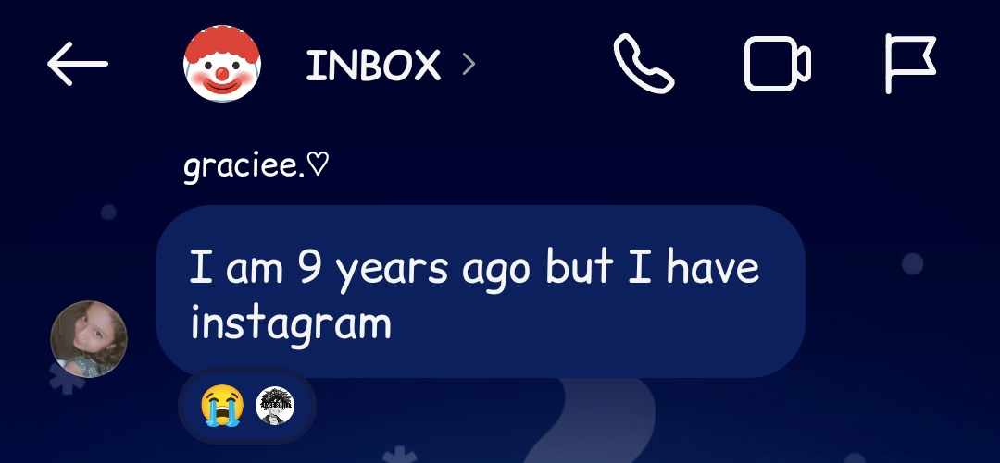

9-Year-Old Joins Group Chat, Leaves Members in Shock
| 25 December 2024
The Unexpected Bombshell
So, everyone was just chilling in the group chat, having their usual random convos, when out of nowhere, someone asks the age of another member. And, boom, the 9-year-old (yeah, you read that right) casually drops this: “I am 9 years old but I have Instagram.” No one saw that coming. The whole group was left shook because no one expected to come across a kid this young on Insta.
The Judgment
Enter Riya (@dorothy.giaa), a well-known and respected member of the chat. Instead of just letting it slide, she decides to throw some shade at the kid’s English, pointing out how “poor” it was. Everyone’s still trying to wrap their heads around the fact that a 9-year-old has an Instagram account, and Riya is over here being the grammar police.
Voice Note Drama
To prove her age, the little one sends a voice note. But instead of getting a supportive “aww” or anything nice, the group starts dropping comments like, “Bohot sexy voice 🫦.” Seriously? Everyone’s supposed to be concerned, and people are talking about her voice like it’s some sort of compliment. Not cool.
Riya Steps In
Seeing things go downhill, Riya then reveals that she’s actually the 9-year-old's sister. And in a move that showed some real protective instincts, Riya kicks the kid out of the group chat. Why? To keep her safe from the weird vibes and some questionable people in the chat. Honestly, props to Riya for stepping up and protecting her sister from the not-so-friendly side of the internet.